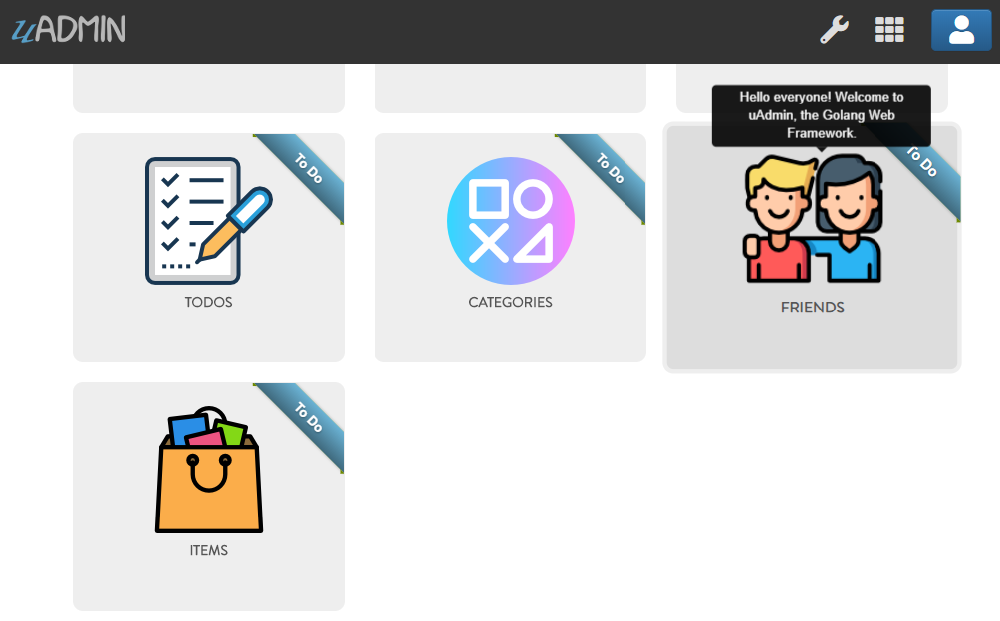

uAdmin Tutorial Part 17 - Wrapping Up Your Application¶
So far you have developed this really cool application that you want to show to your your customer or even to the world. Before you dockerize your application, let’s customize your dashboard in a fashionable way. Making it look good and customizing it to meet your customers requirements is important to the success of your app.
First of all, open “DASHBOARD MENUS”.

Open the models that you have created and let’s add the Tool Tip that means the information you want to show when you hover the mouse to the model, an icon that you like to represent in the dashboard, and Cat which is the highlight of your model.

By default any model that does not have an icon gets this icon:

If you don’t have any pictures or icons in your computer, I would recommend you to go over flaticon.com, but you can browse anywhere online. Once you search for an icon, download the PNG version and choose the size 128 pixels.

Result of my dashboard setup
Let’s change the title of the dashboard in general. Choose ANY of these methods that you prefer.
Method 1: Within the Application Settings¶
Run your application. From uAdmin dashboard, click the wrench icon on the top right side to go to the settings.

Assign the Site Name in the input field. Save it afterwards.

Method 2: ParseFormValue Function¶
Go to the main.go and assign site name in the settings.
func main() {
// Some codes
// Call InitializeSiteName function to assign the SiteName value in the Settings model.
InitializeSiteName()
}
func InitializeSiteName() {
// Assign Site Name in the Settings
setting = uadmin.Setting{}
uadmin.Get(&setting, "code = ?", "uAdmin.SiteName")
setting.ParseFormValue([]string{"Todo List"})
setting.Save()
}
Result

Once you are done with the setup, it’s about time to dockerize your application for the world to see. Go to the Docker Website for more details.
Congrats, now you know how to do the following in the entire series:
Preparing uAdmin files in the project folder
Build an application from scratch
Creating external models
Crop an image
Using Register Inlines
Adding a drop down list to the field manually
Applying different uAdmin tags
Using M2M (Many-to-many) for multiselection feature
Functional back-end validation
API setup and configuration
HTML Template concepts
Access an HTML file
Migration of data
Generate a self-signed SSL certificate
Implementing two factor authentication (2FA)
Reset your password by email
Hash salt
Encrypt your database
Change the dashboard title
Customize your dashboard
Dockerize your application online
Click here to view the full progress of this application.
If you want to learn more and discover about the concepts of uAdmin, you may go to these references with examples: